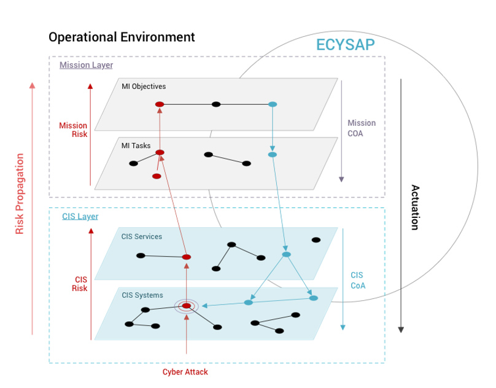

3rd ECYSAP NEWSLETTER
April 2024
The ECYSAP project, a flagship initiative funded by the European Commission aimed at bolstering situational awareness in cyber defense, recently concluded its highly anticipated plenary meeting from April 16-18.
This pivotal gathering served as a comprehensive review of progress across various Work Packages (WPs) and delineated actionable steps to propel the project forward.
‘’To be up to the challenges and threats ahead of us, we need modern and interoperable European armed forces equipped with the latest cyber defence capabilities’’.
Josep Borrel.
High Representative of the European Union for Foreign Affairs and Security Policy.
The main objective of the ECYSAP project is to develop and implement of innovative theoretical foundations, methods and research prototypes integrated towards providing a European operational platform for enabling high maturity real-time Cyber Situational Awareness (CSA) for military end-users, capable of cyber response, automated and deployable in the same area of operations (National/European) interconnected between envisaged and identified intelligent nodes.
The ECYSAP project, a flagship initiative funded by the European Commission aimed at bolstering situational awareness in cyber defense, recently concluded its highly anticipated plenary meeting from April 16-18.
This pivotal gathering served as a comprehensive review of progress across various Work Packages (WPs) and delineated actionable steps to propel the project forward.
At the core of ECYSAP lies the European Defence Industrial Development Programme (EDIDP), an instrumental EU initiative fostering competitiveness and innovation within the Union's defense industry.
Participants representing the French, Italian, and Spanish Ministries of Defence, alongside the European Defence Agency and key Consortium members including Airbus, Cy4Gate, Cybernetica, Indra, and Leonardo, convened to evaluate progress at both the solution and strategic levels.
The meeting, characterized by a dynamic exchange of ideas and a collaborative ethos, proved particularly fruitful in setting a robust trajectory for future endeavors. "This year's meeting was particularly fruitful, setting a robust pathway for our upcoming efforts," remarked Alejandro Campos, one of the assistants involved.
Key highlights from the meeting included detailed reviews of progress across all WPs, strategic agreements to enhance project exploitation, plans for forthcoming workshops and training sessions aimed at bolstering skill sets across the consortium, and a comprehensive list of future actions to enhance Situational Awareness, including participation in upcoming events and fairs.
As ECYSAP presses onward, its primary focus remains on cultivating resilient cyber defense mechanisms capable of adapting to the swiftly evolving threat landscape. "Our goal is to ensure that military operations are equipped with the best possible situational awareness tools to defend against and respond to cyber incidents," emphasized another project coordinator.
For further insights into the ECYSAP project and its profound impact on situational awareness and cyber defense, please visit www.ecysap.eu
The dedication and innovative strategies deliberated upon during the plenary meeting underscore the project's steadfast commitment to spearheading advancements in cybersecurity. With unwavering support from the European Commission, ECYSAP is poised to make significant contributions to enhancing the safety and efficiency of military operations on a global scale.